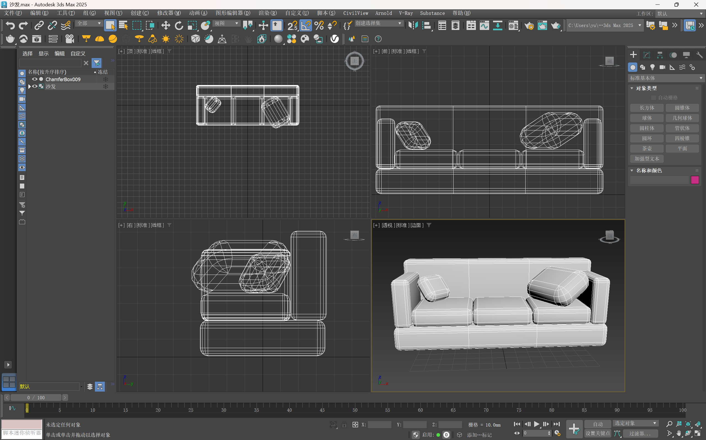
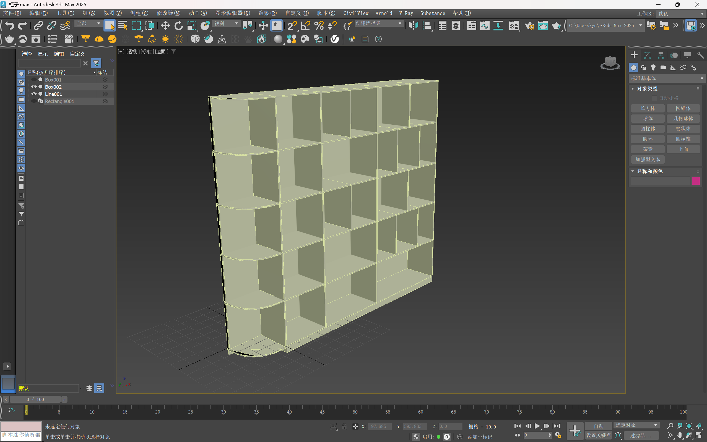
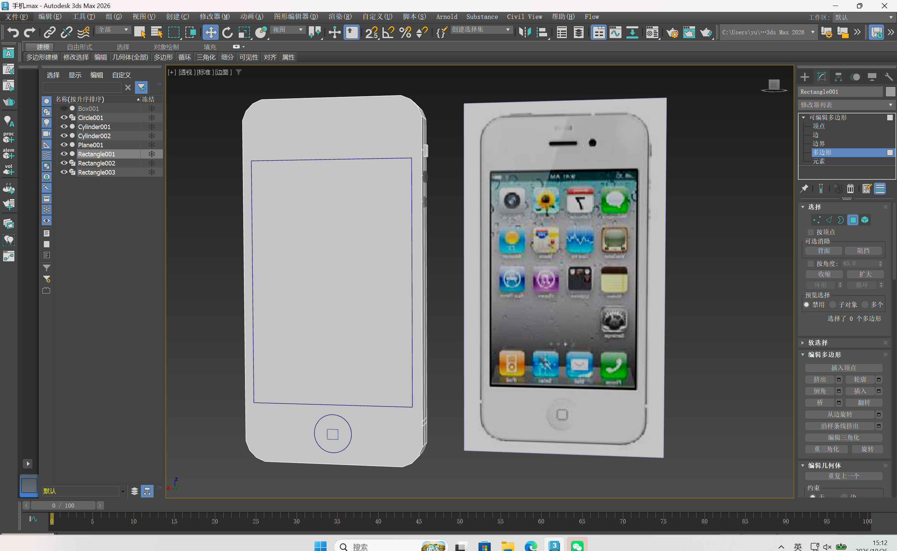
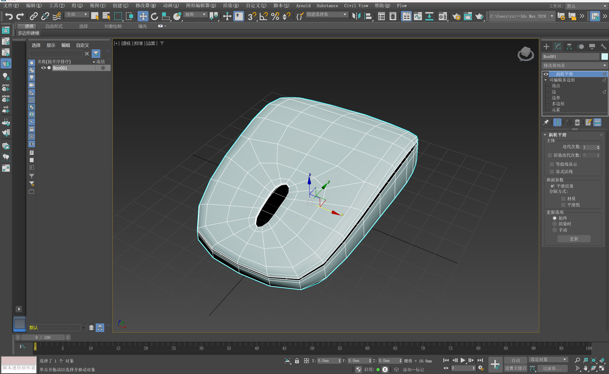

欢迎来到
韶关学院 · 25数字媒体技术01班
3ds Max 作品集
Welcome to My 3ds Max Portfolio
进入了解
第一次作业是个性沙发，采用切角长方体作为基本单元，通过重复堆叠和拼接形成偏方正的体块造型。它看起来不算张扬，但我想表达一种“克制型个性”：像我的性格一样，直接、方正、有棱角，但切角让整体不至于太生硬。整体难度不大，主要难点是物块之间的堆叠对齐、避免穿模，以及枕头旋转摆放时的穿插关系处理。

第二次作业是制作书架，主要使用样条线：先将样条线转换为可编辑样条线，再进行圆角或挤出处理，然后按照给定的模型数据搭建。整体难度不大，重点仍在于控制物体之间的对齐关系，避免出现穿模。

电子产品硬表面建模。参考了经典的 iPhone 4 造型，主要使用样条线勾勒轮廓，结合布尔运算进行挖洞（如屏幕和Home键区域），并配合捕捉对齐功能完善细节。难点在于边框倒角的平滑处理以及侧边按键的精准定位。

鼠标建模。这是一个典型的曲面造型练习。首先建立长方体，通过添加可编辑多边形修改器，不断调整顶点和布线来塑造出贴合手部的人体工学弧度。最后使用涡轮平滑让表面变得圆润细腻，难点在于布线的合理性，以确保平滑后不发生变形。